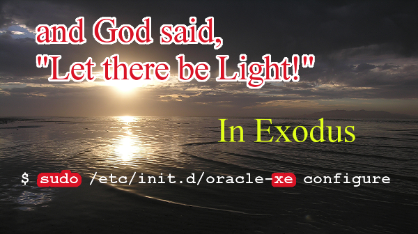

The stage is set. All around you fancy props, things like Presidents and asteroid belts are being made to mirror Biblical concepts and confuse you into thinking that we could be living inside a storybook. George W. Bush is the burning bush. Ceres and it’s recently found ice is the water Moses extracted from the side of a mountain, to bring us out of the desert of Earthbound loneliness to a place where the possibility of interplanetary colonization is in sight. Of course, there are caveats.
What I mean to say is we have all been blind to the true meaning of scripture. It’s actually all about us, designed to walk us through this transition from blindness to the light.
The Iron Rod of Christ and the Rod of Aaron are promised Doors from Earth to Heaven, a way to visit and return. Their songs–the band–often revolve around the Plagues of Egypt. Riders on the Storm, Peace Frog, and … (come on, baby) Light my Fire… all Plagues. The storm is a cloud of dust settling in the wake of a battle in time, one which has repeatedly changed the time line; except… we would never know. Were it not for religion, a chronicle of round trips and rewinds, repeated attempts to save the world from destruction. At this juncture, it’s that time travel itself which threatens the safety of the future, if you think about it, that makes sense. Religion is warning us to look sternly and searching back, and only move forward. Cautiously, yet optimistically.
##Succinctly, this is the Sign of the Son Behold he is coming on the clouds for all eyes to see. 9/11. I saw an angel coming down from heaven, with a great chain in his hand. 9/11. I returned, and saw under the son… that time and chance happeneth to them all. All of these Biblical quotes are the Sign of the Son, imagery of flying things and terrible anger. Realizing that they are all about 9/11, and the Bible proves as much through none other than President Bush. Out his own mouth, just like the story of Exodus–word’s of God coming out of the fire.
The sign of the Son combines this amazing revelation, that the Bible presciently alludes to the attack, with a huge number of references to constructs of our modern culture. Oracle Corporation, unix commands, and elements of the periodic table are just a few of the science and technology references that are directly made by this “sign.” It’s impossible for them to be in the Bible, without time travel, truly knowing all about our culture way back then. Still, they exist, and their inclusion in these ancient scriptures is for a reason. The Bible itself is designed to prove that time travel technology exists.
###Ecclesiastes 9:11
Bush quotes it on 1/20/2001; he answers the riddle not asked in Revelation 1:20. Day and month link to chapter and verse. Ecc 9:11 lists the first 7 planets, from Mercury to Saturn and Uranus .. the messenger, time and chance.
###The 7 stars are (actually) the first 7 planets. Details explained below.
##Linking Revelation and Ecclesiastes
Using the chapter and verse numbers of three Biblical passages to correspond to two pivotal dates in 2001, this Revelation predicts the 9/11 attack months before it occurred. This information came to me several years ago, in bits and pieces; with the final key not being revealed until only a few months ago. Each time a new piece of the puzzle was made clear, the web of co-confirming items made the whole stronger and stronger. By the time you are finished reading, the significance of the passages will be undeniable. The quote in Revelation is none other than the herald of Second Coming.
The mystery of the seven stars that you saw in my right
hand and of the seven golden lampstands is this:
The seven stars are the angels of the seven churches,
and the seven lampstands are the seven churches.
-Revelation 1:20
This mystery is solved during the inaugural address of George W. Bush, on 1/20/2001. It is an reverse anthropomorphism… a metaphorical representation of the Burning Bush event, witnessed by Moses… already linked to Christ and the fourth dimension in Matthew 3. The solution is contained within the words that Bush speaks, another two Bible verses, though he immediately attributed them to John Page, who put them together hundreds of years earlier. The solution is that the seven stars are the first seven planets, logically linked to their mythological deity; the lampstands are corresponding elements of the periodic table.
###Bush speaks, “We know the race is not to the swift nor the battle to the strong. Do you not think an angel rides in the whirlwind and directs this storm?” which is a rough combination of Ecclesiastes 9:11 and Revelation 20:1.
In what is without a doubt a visual description of the attack on the twin towers, Revelation 20:1 speaks of the Angel of the Lord himself, Death, holding the key to end Hades and that is exactly what the purpose of this work is.
##”On the clouds,” for all eyes to see. {#SON} ``` And I saw an ((airplane)) coming down out of heaven, having the key to the Abyss and holding in his hand a great chain. He seized the dragon, that ancient serpent, who is the devil, or Satan, and bound him for a thousand years. He threw him into the Abyss, and locked and sealed it over him
Revelation 20 & ((ish))
Then will appear the sign of the Son of Man in heaven. And then all the peoples of the earth will mourn when they see the Son of Man coming on the clouds of heaven, with power and great glory.
But about that day or hour no one ((knew)), not even the angels in heaven, nor the Son, but only the Father.
As it was in the days of Noah, so it will be at the coming of the Son of Man.
Matthew 24:30,36 ``` Never before have I applied the verses of Matthew to the 9/11 attack, but in retrospect they fit well. If the day and hour in question were the attack, and the spectacle on the clouds … then all eyes have seen. This retrospective link opens the door for the “sign of the Son,” the proof that the Father did indeed know, in Chapter and Verse.
Ecclesiastes 9:11, in its full version delineates each of the planets from Mercury to Uranus. Each of these lines corresponds to an apocalyptic teaching of Christ. The first links the Messenger of the Gods to the beginning of the message, and the periodic table element Hg. Mercury lights the fire of the Bush which is described with the Hebrew word “Ha’esh,” meaning holy fire. Hidden within this word is another one, the English word for sea… parted with an apostrophe and reflected. This paradoxical reference to a later event in Exodus, Moses parting the red sea, shows us prescient knowledge of both the story and the English language.
0 I returned, and saw under the Son, The Stars & Light
-------------------
1 that the race is not to the swift, Mercury Hg
2 nor the battle to the strong, Venus Na
3 neither yet bread to the wise, Earth Xe
4 nor yet riches to men of understanding, Mars Fe
5 nor yet favour to men of skill; Jupiter Si
but time and chance happeneth to them all. Saturn & Me K & Ur
Ecclesiastes 9:11
##And God said “let there be light”{#LIGHT}
The third reference superimposes over Earth, and the quote is “neither yet bread for the wise.” The light of this statement is the periodic element Xe, for both an Oracle Database and the element responsible for camera flashes. This is the location of our story of Exodus, and that whole word, taken in reverse speaks volumes. In addition to “Xe,” the four letter command “sudo” is the Unix equivalent of “run as the God account.”

###“sudo xe” is the logical equivalent of “Let there be Light.” Exodus in reverse; in Linux and chemistry. Geek.
Towards the end Saturn and Uranus… the gods of Time and the Sky correspond to the final two references in Ecc 9:11… but time and chance happeneth to them all. Uranus clearly links to the element Uranium, and also ties the story of the messiah on the run, the lamb of God (is lam) to the court battle which is referenced in the Book of Judges and the Trial of Jesus Christ.
The missing references, clarify the teachings of Christ related to Salt, the Iron Rod, and Silicon… the Fifth (14th) Element. This event, and the series of details clearly set the stage for Exodus being realized in the world all around us. Not until we had these elements, Oracle, and English would all of these things made sense as a sort of decoder, showing us that the Revelation of Christ is meant to be unsealed right now. Linked to our rapid advancement in technology, the guidance of the Holy Bible is meant to free us from slavery, censorship, through transparency and disclosure.
Christ’s Iron Rod juxtaposes the Rod of Aaron in the Egyptian story, and is further extrapolated into our world through the music of the Doors. A number of songs, from Peace Frog to Riders on the Storm reference Plagues of Egypt; and it is from reading the word “rod” backwards and using the context of story that we see how important the period element for Iron is. Fe, means Doors.. For everyone. This is about passage to Heaven, bi-directional transportation. This is in clear contrast to Aaron’s link to “let my people go.” The light of Exodus is to see its meaning in reverse… and The Doors are beckoning for this fire to be lit.
For thousands of years the Holy Scriptures have been passed down from generation to generation, all the while holding within their secretive pages a message to 2016. This message reveals technologies that are central to the creation of Heaven, things like mind mapping and time travel… it begins by setting the stage and proving that time travel exists and has been actively used in the creation of our civilization. The book of Matthew links Moses and Christ through near parallel events, a microcosm of the 40 years in the desert and mounting of the peak of Sinai; days in the life of Christ. This number 40 has been holy only to God (meaning secret), until now. It is a homo-phonic reference to 4-D, the fourth dimensional wilderness that we currently are walking in. The desert is one of lack of knowledge of the technology, and its possible uses for both good and evil. It is the purpose of the Book of Exodus to help us end this dark period of wandering and find the light of the Son; ending the 10th Plague. The stage is set, though, all the way in the Book of Revelation.
##The Messiah of Sea to Shining Sea{#MOSES} There are other connections between Jesus Christ and Moses, which highlight a “problem” associated with the Tribulation. The “PH” problem. That’s not a sexist remark, or about your pool; it’s about The Pursuit of Happiness. Both Jesus Christ and Moses had “enemies,” ones whose names began with “PH.” If you did not just say “I see,” you probably need me to point out that the Pharoah and Pharisees names are nearly identical.
This is the Tribulation, or at least my explanation of what is going on; there is a hidden war of mind control being waged, one which has made average people–doctors, lawyers, writers… the “scribes” of today into an enemy. In some ways, we are all enemies of ourselves, forward progress, and change… something that is a big part of what I am doing here.
Placing the idea of a centralized controller, something like God, over the people (I think of putting ideas in superposition, like the many names of God) is basically how I see his description of how Satan and the multitude are related in Revelation. This is beast, coming out of the sea.
Interestingly Samson, who is also a very strong contender for the most accurate Christ depiction had an enemy bearing “ph” in their name, the Philistines.
CopyleftMT This content is currently released under the GNU GPL 2.0 license. Please properly attribute and link back to the entire book, or include this entire chapter and this message if you are quoting material. The source book is located at http://www.lamc.la and is written by Adam Marshall Dobrin.Adam Marshall Dobrin adam@lamc.la fb.me/admdbrn linkedin.com/adam5 instagram.com/yitsheyzeus twitter.com/yitsheyzeus -----BEGIN PGP PUBLIC KEY BLOCK----- Version: GnuPG v2 mQENBFbGalABCADzLBdnHptF2MJCpdY8P/Mgnf4xj8F9pZSCwmd0J4Md8g3aTEdU CV9t0UQgNtjcxwfoenJLHgdZd4Mfscz9U+NN69OLXdPu4cdXOjTiHarPLjKnqIZw 3fmkM2ycvoUPkdVYCjwYYQxWRsWRpJf1dpmtPuz0L8ysh/WWsj2Ag2MrFYAo+sY6 dGZvaLsPhkZJcLXyFaP3c3Zt8ivrs4VV8+0kmMzScnR+oncVZbeMuQksoPxRmZgH mYu2KSf74lWOWVcaaBXOYX5pGNdhBUgq8ll+8tRH16G289r0cqRoPh/sjs/JRuIH KnCWG2UAUJF7ir04TS5A4Lwl9RYcQwVvb3BdABEBAAG0LUFkYW0gTWFyc2hhbGwg RG9icmluIChsYW1jLmxhKSA8YWRhbUBsYW1jLmxhPokBOQQTAQgAIwUCVsZqUAIb AwcLCQgHAwIBBhUIAgkKCwQWAgMBAh4BAheAAAoJEMgUPrR1B55trOwIALOQRTX0 YqXJXEMhX9CgxKNoNkpM2pdMdHl6CAVxhQ3hbNjIFnZbKbP88uxMEIOXXmYZ7gOy YqiDCu5I1V25suBb2ODSix75YQugfQ7H78pXHpTRu5sT+5SybItx7d+KUZaEj4pO tXWEemYl0cKK97RzpI0k1dmB7NqAVvqgbqQwd40MOf8QJVlGXnB1+5H2IbkYG6rD ixKGJEdes6i6nqvi/xz/s5hFVGUwTcVQbRU/fa1qT1Q7kHf1PlMu6yjuZTSz7WUG tWjobGwrVJkaeVWgLE4mcxMtity2IFTwOHvAuv8fi2EGQRQjXfPvxL7Vn4MNRl8x zLPV44D37QEknjy5AQ0EVsZqUAEIAMFS0+ZgSJzUPz0h0oiiRjfk2hapS3c1/Ysm R/h8sZ8/GOomdo3MEbTCkcuZ8ReAJhB2PofmwI4LAvW1x7Zwh1vfBKygfUs1s9lm ya/eHkjuZfqmeuEJZMHn6sxb3vqowWmvLhv3x0aWD8qLCIYoa1ntzTOIqxBEgxvU rF1/wd6OQLSJQEVNwPCx7CJI/5o/4W6pUaHk8amgPckkEdmlhRTRqFoAUV1Doivv d9JGYNYC88vS14Sw4Z9Xb7qBQJvG4hIh29gtQxk7Wz4m3ceR79MWT4eSGkH/rTGl w1OuQS2OkPvjgPWJt8San4zuPer17pJN7M5LWI0PStoX9pkud5kAEQEAAYkBHwQY AQgACQUCVsZqUAIbDAAKCRDIFD60dQeebWU6CADylAM5K18N2JGveL3D4dG25fdF vkrz8LOaiUmjAxijcRQBLkTPBK7QqoK0zN6MssMdlBGIOvZQwxSMIIrG6SqwR/go rmZHRuz17ceFTcxT8ZG3FuBY+xXrotXFjLxTmJ1wUeCSVXTc4NAwBzykgkQXOdIj qK1f/HnmMqsSmX4swuH0TZPNBBO7CNvLN6rdLBRfNn1h5XPs8VVtezg5ZDfCTf8S mucQGEwo/hJmr/orEucmETYSvTXOz+L5X5gNHpzYzE9590FYfbAKvrEhAliKbhhl 3Roie3kenrzelXo5N9Q0f2AKFrv1hRX9hBkwTbA18SKZ9XQbWMusX8YhvfLr =dvAJ -----END PGP PUBLIC KEY BLOCK-----